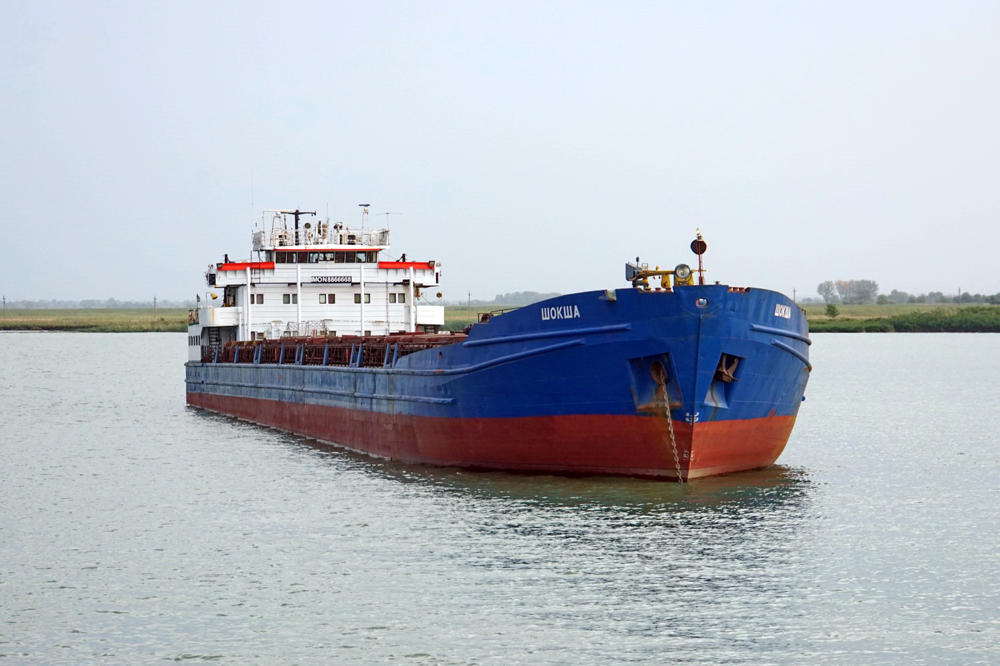
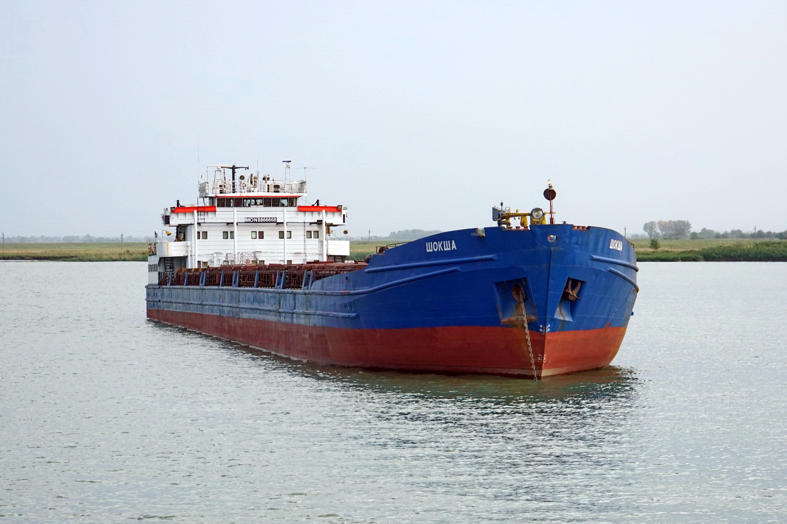

Испытательный Центр «Marine Technology Service» ИЦ «MTS» функционирует на основании:
- Положения об Испытательном центре «Marine Technology Service» Федерального государственного бюджетного образовательного учреждения высшего образования «Астраханский государственный технический университет» (ФГБОУ ВО «АГТУ»)
- Приказа от 25 января 2019 года № 11 «Об утверждении методических рекомендаций по описанию области аккредитации испытательной лаборатории (центра)» (в ред. приказа Росаккредитации от 21.03.2019 №50)
- ГОСТ ISO/IEC 17025-2019 Межгосударственный стандарт «Общие требования к компетентности испытательных и калибровочных лабораторий»
- Федерального закона от 28 декабря 2013 г. № 412-ФЗ «Об аккредитации в национальной системе аккредитации» (в редакции 27.01.2019 г.)
- ИЛАК-G18:04/2010 «Руководство по формулированию областей аккредитации для лабораторий» (с изменениями на 21 марта 2019 года)
- НД 2-02-0101-040. Правила технического наблюдения за постройкой судов и изготовлением материалов и изделий для судов
- Доверенности и приказа Ректора по Университету от 30 апреля 1999 года, № 73.
Основанием для проведения ИЦ «MTS» работ в области аккредитации является Свидетельство об аккредитации Центра.
ИЦ «MTS» является технически компетентной и независимой организацией при проведении испытаний в соответствии с областью признания.
ИЦ «MTS» является структурным подразделением Университета. В своей деятельности Центр пользуется по Доверенности статусом юридического лица Университета, который имеет: устав Университета, расчетный счет в банке, круглую печать и угловой штамп со своим наименованием, фирменные бланки, самостоятельный баланс.
Центр независим от изготовителей, потребителей, разработчиков оборудования и является при испытаниях третьей стороной.
Статус Центра, организационная структура, административная подчиненность и система оплаты труда его сотрудников исключают возможность оказания коммерческого, финансового, административного или какого-либо иного давления на Центр или его персонал, способного повлиять на результаты, проводимых им испытаний.

 
